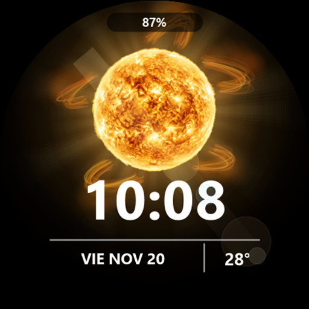
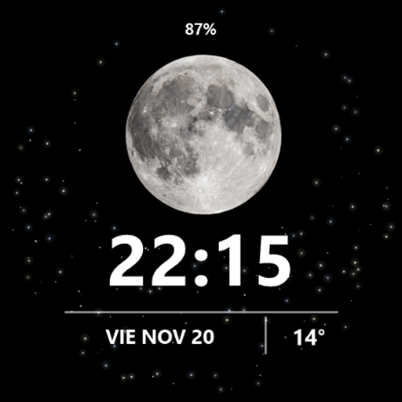

Weather Land
Carátula fotorrealista optimizada para pantallas AMOLED en Wear OS. Clima en vivo nativo del sistema con sol con llamaradas, fases lunares reales, nubes volumétricas, tormentas con rayos, lluvia sobre el cristal, nieve y niebla.
🧪 ¿Quieres probarla gratis en tu reloj Wear OS?
Inscríbete en la prueba cerrada en 2 pasos usando la misma cuenta de Google de tu reloj: primero únete al grupo de testers y luego activa la descarga en Google Play.
Características principales
☀️ Clima nativo sin API Keys
Utiliza los proveedores nativos de Wear OS 5+ ([WEATHER.*]). Funciona al instante sin crear cuentas ni configurar llaves externas.
🖤 Fondo Negro Puro AMOLED
Diseñada sobre #000000 para resaltar el efecto realista sobre el cristal del reloj y maximizar el ahorro de batería OLED.
🌧️ Efectos sobre el cristal
Lluvia en doble plano, gotas resbalando sobre el vidrio, condensación sutil que respira y relámpagos cayendo desde nubes de tormenta.
⚙️ 5 Ajustes desde el reloj
Activa o desactiva Hora, Fecha completa, Batería, Temperatura y efecto de Vidrio Empañado directamente en la personalización del reloj.
Capturas de pantalla (Wear OS)





Política de Privacidad / Privacy Policy
Última actualización / Last updated: 20 de noviembre de 2026 — App: Weather Land (com.soycamiloypunto.weatherland)
También disponible en página dedicada para Google Play Console: privacy.html
Español
Weather Land es una carátula para Wear OS desarrollada bajo el estándar oficial Watch Face Format v2 sin código ejecutable. Esta aplicación no recopila, no almacena, no procesa ni comparte ningún dato personal, ubicación ni información de uso con el desarrollador ni con terceros. La información del clima, hora, fecha y porcentaje de batería se lee localmente desde los proveedores del sistema Wear OS únicamente para mostrarse en la pantalla del reloj.
English
Weather Land is a Wear OS watch face built with the official Watch Face Format v2 (resource-only, no executable code). This application does not collect, store, transmit, or share any personal data, location data, or analytics with the developer or any third party. Weather conditions, temperature, time, date, and battery level are read strictly locally from native Wear OS system data sources solely to render the watch face on your device.
Contacto / Contact
Desarrollador: soycamiloypunto — Repositorio: github.com/soycamiloypunto/watchface_weater